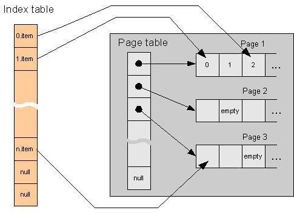

StableArray Class
Random container that holds addresses of items unchanged.
template <class Type>
class StableArray : public RandomContainer< Type >
Template parameters
- Type
-
Type of items the array stores.
Members
Constructors
Content management
| Swap |
Swaps content of two arrays.
|
Content query
| Enumerate |
Allows enumeration of the array's content.
|
| Begin |
Returns an iterator referring to the first item in the array.
|
| End |
Returns an iterator referring to the one past last item in the array.
|
Performance tuning
Public Types
Description
StableArray is a RandomContainer implementation that can hold addresses of stored items unchanged.
This is achieved using a map table storing pointers to items residing on memory pages.
At insertion or deletion the map table is manipulated, the items themselves are not affected.
It allocates memory in allocation units which contain one or more pages depending on the
allocation strategy.
StableArray's public methods are non-virtual and are inline if appropriate.
Among random container implementations StableArray has the following advantages:
- Addresses of items are by default stable so references to items can be stored in
long term. There is no reallocation and at insertion and deletion only the map table
storing pointers to items is manipulated. Items themselves reside on memory pages.
When a new item does not fit into the array then a new page (ore new pages, depending
on the allocation strategy) is allocated and as always a new pointer to the item on
the new page is stored in the map table.
However deletions leave holes on pages causing fragmentation and memory wasting.
This can be corrected by compacting items on pages (either manually or automatically)
but this operation moves items so addresses of items will change! Note that subsequent
insertions will also fill the holes.
- Insertion and deletion is relatively fast because only pointers to items above the
insertion or deletion point are copied using fast memory copy instead of copying items
one by one by invoking their assigment operators. As a result, insertion and deletion can
be easily be 10 times faster than at other random container implementations.
- Memory utilization is good. With constant allocation strategy it wastes at most
two pages. With linear allocation strategy it wastes at most
sqrt (8 * page_count + 1) - 2 pages.
However memory utilization of the exponential allocation strategy is bad and its
characteristics are similar to that of Array's.
- It rarely allocates memory and holds little allocation units with linear (in 4 Gb at most
approximately 10000) and exponential (in 4 Gb at most 32) allocation strategies.
However with constant allocation strategy and large number of items it allocates often
and holds relatively large number of allocation units (in this cases single pages).
Among random container implementations StableArray has the following disadvantages:
- Deletions leave holes on pages causing fragmentation. This can be corrected by compacting
items on pages (either manually or automatically) but this operation moves items so
addresses of items will change! Note that subsequent insertions will also fill the holes.
- Imposes considerable storage overhead on items: total cost of an item storage cell
involves the item itself, a pointer to the item and a little overhead due to the page
table that contains pointers to pages. If the array contains inetegers this overhead
will at least double the total cost.
- It has large own size: currently 40 bytes.
Items are required to have default and copy constructors and assigment operator.
In addition if they have comparison operators (== and !=) then value dependent
operations (eg. Find, Count, Contains etc.) will be also useable.
The following figure shows the internal layout of the StableArray:

Requirements
Namespace: GS
Header: StableArray.hpp
See Also
Array | PagedArray